Blender Lego Minifig Tutorial - Hips and Legs
This tutorial continues modeling the figure (mid-stage): duplicating geometry, adding circular details, mirroring, creating legs, using loop cuts, bevels, and subdivision for smoothing.
Core Principles: Saving and Workspaces
Save frequently
- Press Ctrl+S regularly to save your progress.
- Have a number at the end of your file name to increment.
- Press the "+" and save button to increment save.
Workspaces
Work as before with a Y forward front view and an X forward side view in Layout Workspace, and a perspective view in Modeling Workspace:

https://gyazo.com/3c915c6b8167f5cb51e74ddf6d8b67f5

https://gyazo.com/cbdb40fce538ba97854c1fb8ecc7c569
Video:
Step 1 - Create Waist Models
Step 1 - Create Waist Models:
- Create two waist elements from cubes as you did for the torso
- In object mode, create the first cube under the torso with Shift+A - Move downward: press G => Z and move along the Z axis to reference location.
- Adjust with vertex moving in Edit Mode/Press 1 to preserve normal scaling
Duplicate
- Duplicate and position that cube for the base of the legs (Shift+D)
- Right-click to keep the duplicate in place.
- Move the duplicate down to reference center: press G => Z, move along the Z axis.
Bevel, Smooth
- bevel both as needed (Ctrl+B)
- Smooth as needed (Ctrl +2, RMB=>Smooth Shade)
- Can also be created like torso by cutting in half, mirroring for precise symmetry.
Step 2 - Circular Hip Detail, Extrusion and Mirroring
- Add a circular detail
- Add a Circle (Add => Mesh => Circle).
- Select Add Circle box at bottom of window for parameters
- Set the vertex count to 16 for lighter geometry.
- Rotate the circle 90° (R => X, Z =>90) in views or type (90,0,90) into parameters.
- Move (G) and Scale it (S) to the reference. (.3 if typing in parameterrs)
- Rotate (R) in X (Side) view to have verts at leg line
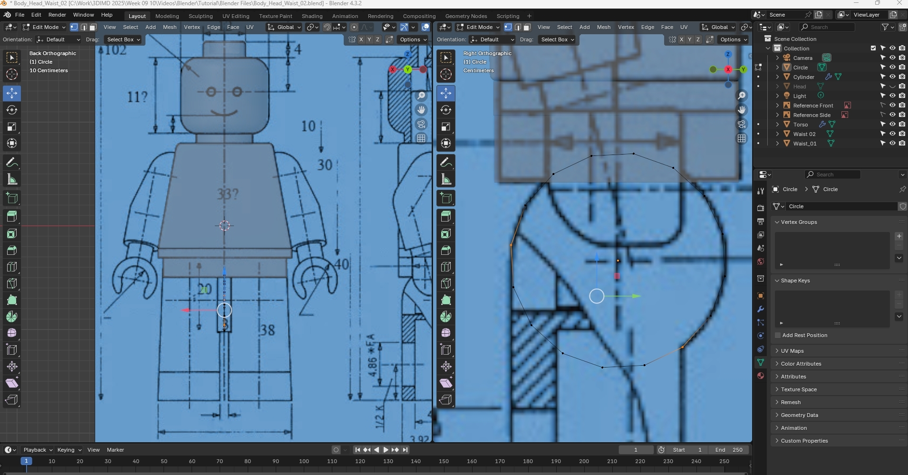
Gyazo preview (click image to expand).
Extrude
- In Front View (Y Axis) and Edit/Vertex Mode (1) =>
- Press Tab, A, E, X to extrude from center to reference edge
Mirror
- apply transforms (Ctrl+A => Apply Rotation & Scale) to avoid issues.
- In Object mode, add a Mirror modifier
- If halves overlap, enable Clipping to keep the center welded.
Apply transforms and center geometry
- In Object Mode,
- apply transforms (Ctrl+A => Apply Rotation & Scale) to avoid issues.
Extrude and Merge for caps
- MMB into perspective Mode
- Tab for Edit Mode
- Alt-LMB on outer edge to select
- Press E to extrude and S to scale once, LMB to accept
- Press E to extrude and S to scale Again, nearly closing the circle, LMB to accept
- With ring of vertices still selected, Press M and select Merge/At Center
Subdivide and Smooth
- In Object Mode
- Add Subdivision Surface (Ctrl+2 shortcut or modifier) to smooth the mesh.
- Add additional loop cuts near hard edges to preserve form after subdivision.
- Right-click => Shade Smooth to improve shading.
Bevel Edges
- Bevel edges for rounded shapes
- Select edges or loops and press Ctrl+B to bevel.
- Move the mouse to set bevel width and use mouse wheel to set segments.
Step 3 - Create and Shape the Legs
- Create legs
- Tab for Edit Mode, 1, Select the circle cap vertices
- Shift D to duplicate faces, right click to accept in place
- Press P ? Selection to separate as a new object.
- go out of Edit into Object Mode
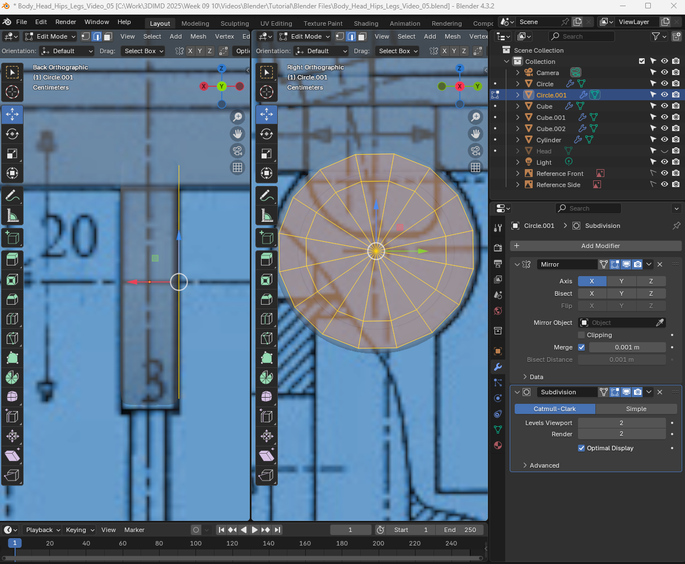
Gyazo preview (click image to expand). - Select the new Circle Object
- Go into Edit Mode and Extrude in X out to reference front view (Y)
- Remove Subdivision modifier from Object
- Rename as Legs
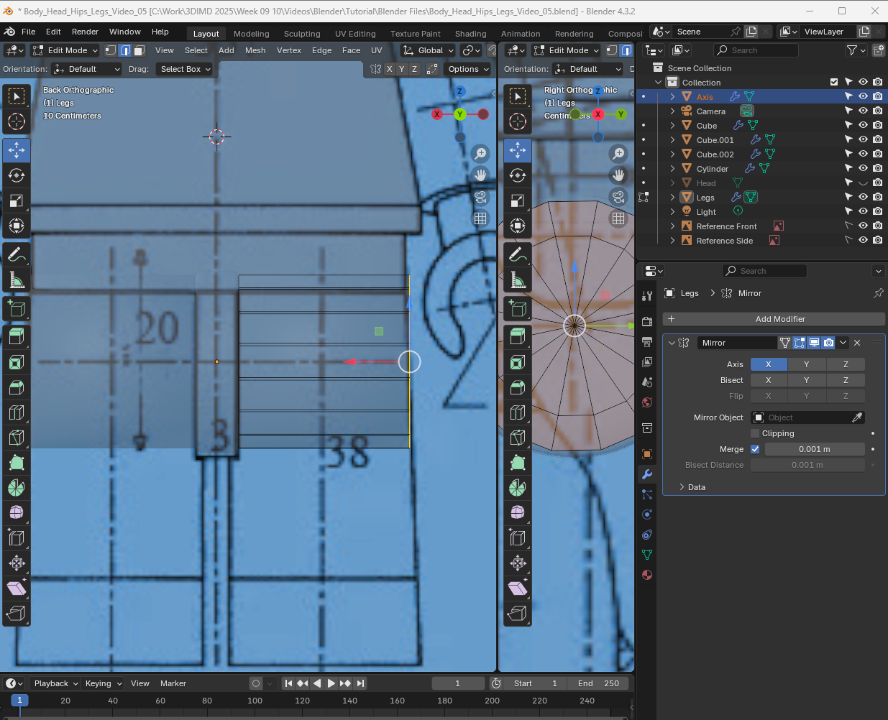
Gyazo preview (click image to expand). - In Edit Mode, shape leg geometry by extruding (E), scaling (S), and moving (G):
- Select Vertices in Edit mode that are covering leg reference as below
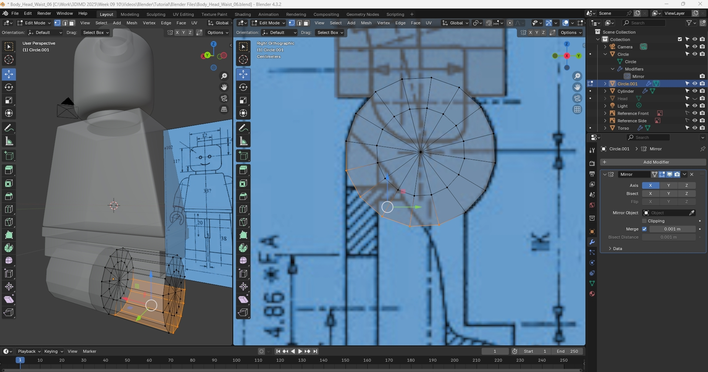
Gyazo preview (click image to expand). - Select Vertices in Edit mode that are covering leg reference as below
- Extrude down until they meet the top of the foot
- Right click to accept Extrude and Press S to scale
- Press Z, then 0 to flatten the vertex line.
- Move this to top of foot line in reference
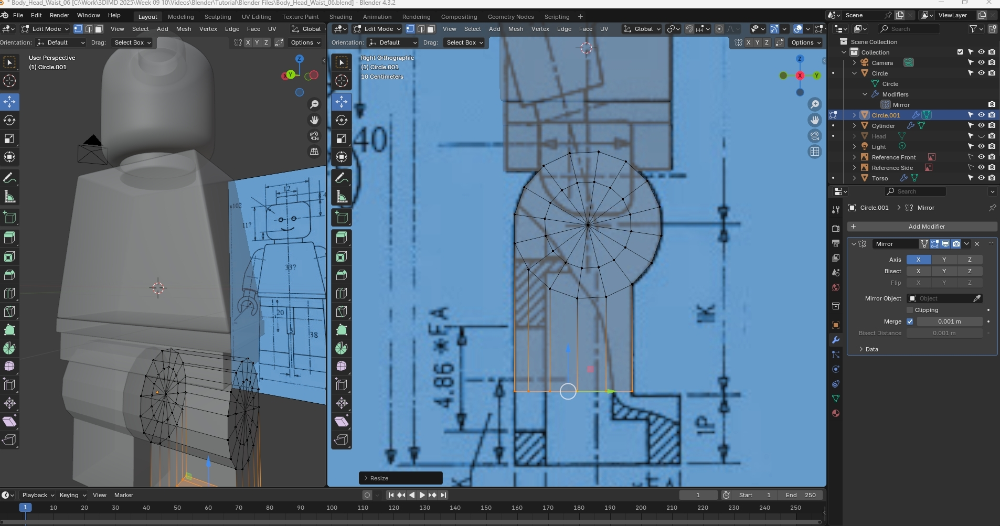
Gyazo preview (click image to expand). - Extrude down until they meet the floor
- deselect all, then select vertices or face for the front of the foot
- Press E to extrude in Y to reference.
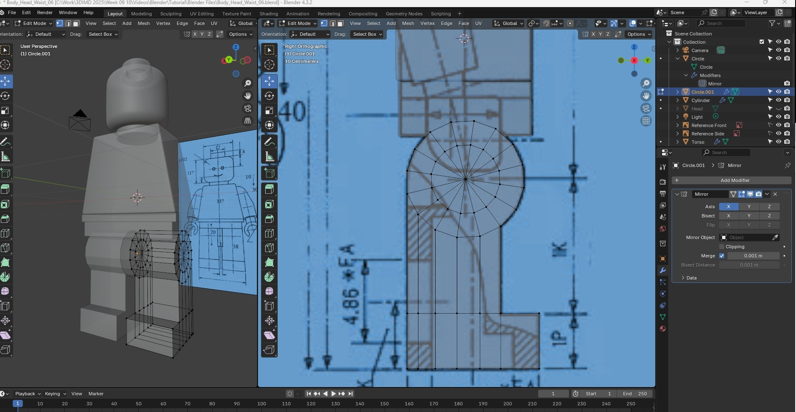
Gyazo preview (click image to expand). - In Edit mode select Outside vertices in Front (Y) View
- Rotate these for the leg angle in the reference.
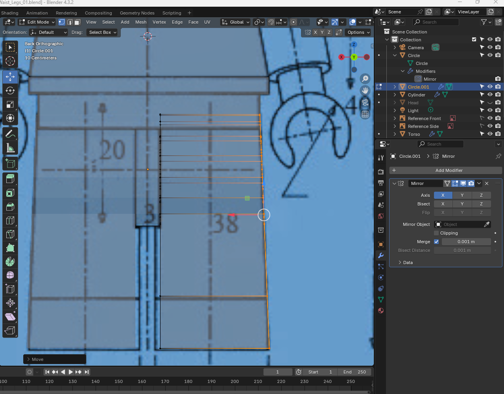
Gyazo preview (click image to expand).
Step 4 - Bevel, Subdivide and Smooth
- Bevel, Subdivide and smooth
- Shift Alt Click to select outer edges of leg
- Ctrl+B to bevel
- Add Subdivision Surface (Ctrl+2 shortcut or modifier) to smooth the mesh.
- Add additional loop cuts near hard edges to preserve form after subdivision.
- Right-click => Shade Smooth to improve shading.
- Adjust leg to taste
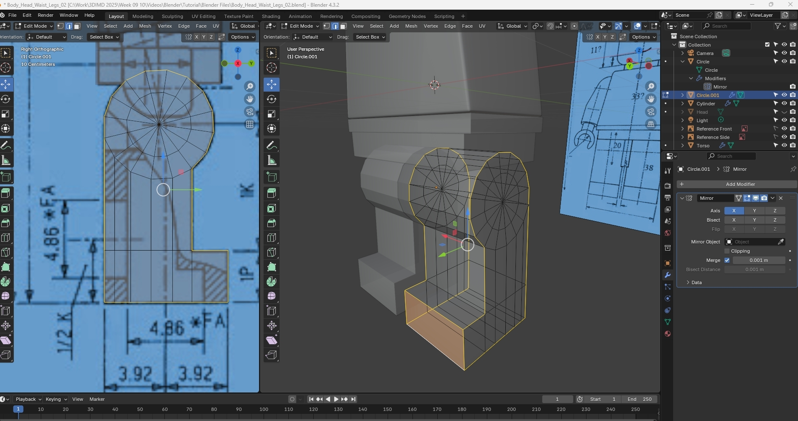
Gyazo preview (click image to expand). images/00bea1d5f7f9ec98ad2e0dc8ac29390c.jpg
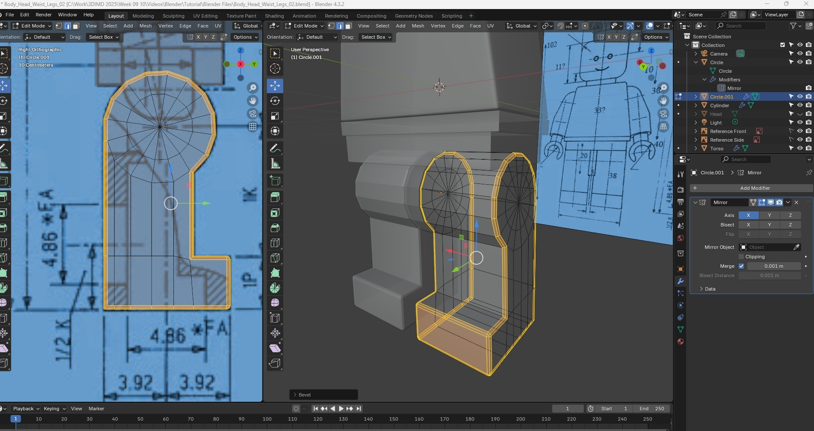
Gyazo preview (click image to expand). images/70823bd29452bfe0a40aac2a917b6e9a.jpg
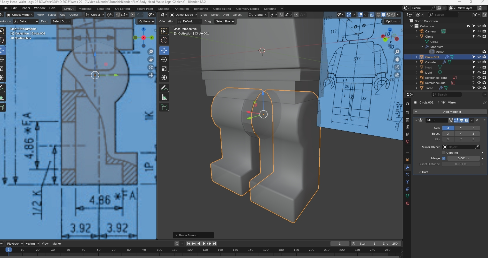
Gyazo preview (click image to expand).
Step 5 - Separate the Mirrored Leg
- Separate right leg from Mirror Modifier
- In Object Mode
- Select object and go to Modifier tab
- In Dropdown click Apply
_ it is now actual geometry but still part of the same object
- In Edit Mode, 1 (Vertices)
- Select the new mirrored leg - hove mouse over and click L
- Press P and choose selection
- In Object Mode they will be separated and you can name them
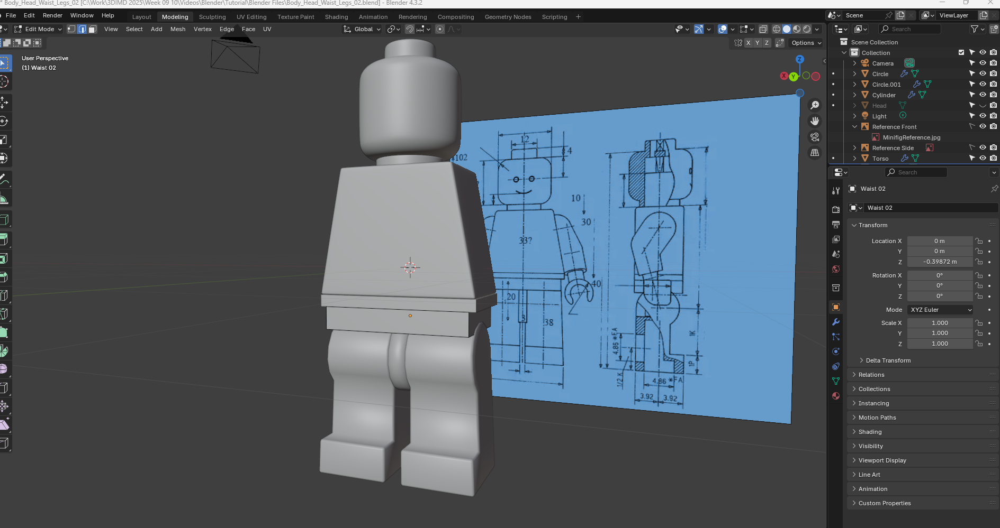
Gyazo preview (click image to expand).
Notes, Shortcuts and Topology Cleanup
Notes & Shortcuts:
- Shift+D: duplicate; right-click to cancel movement but keep duplicate at same location
- Tab: toggle Edit/Object modes
- G, R, S: move, rotate, scale
- Ctrl+R: loop cut; click then right-click to center
- Ctrl+B: bevel edges; mouse wheel to change segment count
- P => Selection: separate selection into new object
- Ctrl+A: apply transforms (Scale/Rotation)
- Ctrl+2 / Ctrl+3: quick Subdivision Surface presets
- Alt+Click on edge: select loop; Alt+Shift+Click: add loop to selection
Clean topology and collapse unnecessary geometry
- Use tools like Dissolve, Merge, or Delete (X) to remove unwanted faces or vertices.
- Use Alt+Click to select entire edge loops and operate on them efficiently.
- Use loop cuts (Ctrl+R) to add edge loops and right-click after clicking to place the cut centered.
- If you need to remove part of it, delete or dissolve faces/edges (X => Faces/Edges).